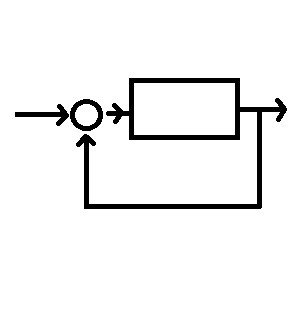

The U-CARE Group researches problems in healthcare that could be solved by applying:
Design

Control Theory
Robotics
Kelilah Wolkowicz, Ph.D., is a mechanical engineer at the University of Massachusetts Lowell. Wolkowicz studies problems in healthcare that could be solved by applying design, control theory, and robotics. Her research focuses on developing methods and mechanisms to further enhance or promote patient independence, while addressing patients’ needs to remain, as much as possible, integrated socially and productively as members of their communities. She is an engineering faculty advocate for the River Hawk Scholars Academy, an engineering faculty fellow for DifferenceMaker, and a faculty advisor for the Society of Women Engineers UML chapter.